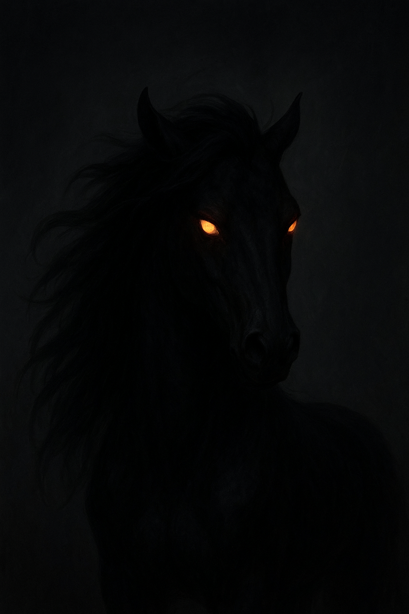

Troia

Aparêcia
Tem orelhas bem levantadas
tem uma velocidade imensa
tem uma crina enorme
sua cor muda dependendo se ela ta contrariada ou feroz
tonalidade de cor escura
seus olhos brilhan no escuro como fogo
Habilidades
ela pode ficar invisivel no escuro devido a sua tonalidade de pele escura
tem uma pisada que deixa qualquer animal com medo
sua pegadas deixam rastros de fogo por onde passa
Habitat
Está egua vive em uma caverna escura onde a uma grande onda de calor, nenhum ser humano seria capaz de suporta aquela temperatura a caverna em si e bem escondida nenhum ser humano encontrou ate hoje so rumores
Curiosidade
Sua preçensa temem qual quer um que esteja perto mesmo a noite sobe um calor temivel, dizem que quem a viu nao conseguiu enchegar muito bem, Ela sai so a noite como um morcego em busca de se alimentar de almas assustadas